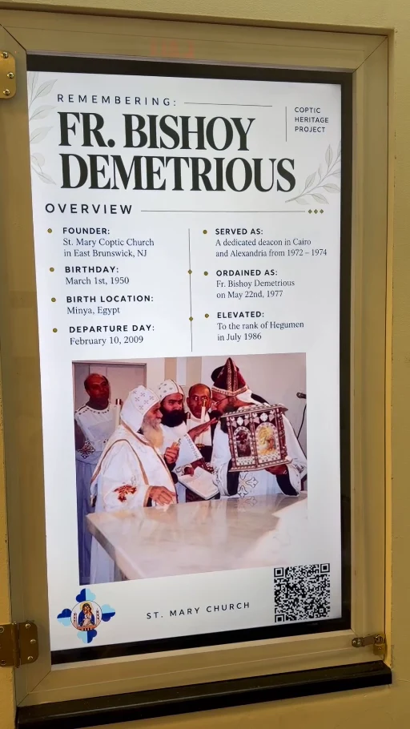

RASPBERRY PI / DIGITAL MEDIA / WEB DEVELOPMENT
Interactive Digital Heritage Display
A Raspberry Pi-powered digital display paired with a custom-built biography website, connected through a QR-code experience.

Overview
I built a digital display system to present changing biographical and historical content in a public setting. The project combines a Raspberry Pi-driven screen with a companion website that I also designed and developed, allowing visitors to explore more information by scanning the on-screen QR code.
How it works
- Display hardware. A Raspberry Pi connects to the display and presents the featured photographs and other visual information.
- Digital content. The display cycles through visual material suited to the current featured individual.
- QR-code access. Visitors scan the QR code to open a related biographical website on their own devices.
- Website development. I created the companion website to provide further information beyond what can fit on the display.
- Reusable system. Both the display content and the associated biography can be updated for a new featured individual each month.
Demonstration
Outcome
The project connects a physical digital exhibit with a mobile-friendly way to explore additional information. Its rotating content and linked website make it practical to update the featured biography without redesigning the whole system.